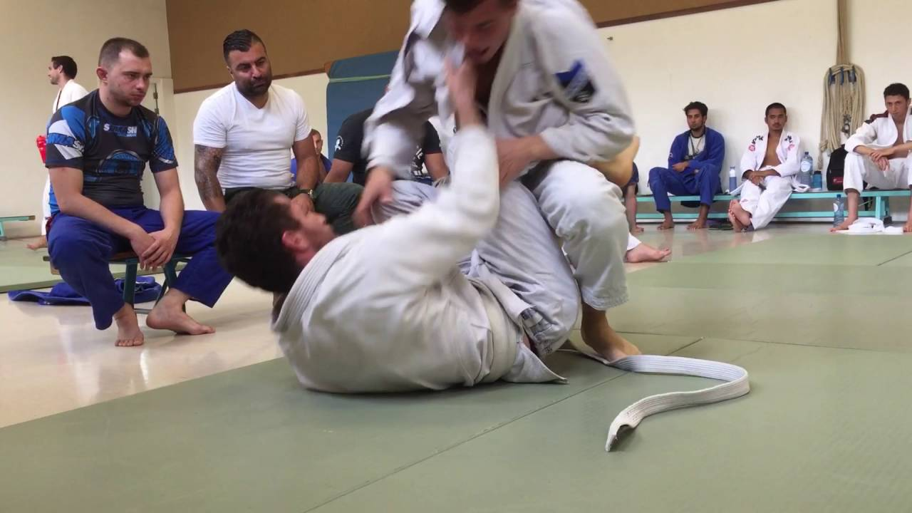
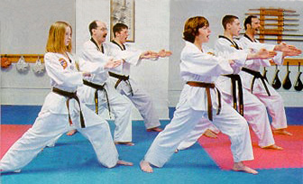

This club offers indoor tennis, squash, Fencing and many other indoor games. It is one of the best clubs in Amsterdam

The is a very good club. Usually specialising in kick boxing,gym, Yoga,Body Swing.
This is a japanese self defence art that allows you to control or eliminate an attacker in a matter of seconds. The goal of the academdy is to spread and teachBrazilian jiu jitsu in amsterdam in a modern facility where everybody can train in a nice and friendly atomosphere.
This is great club specailizing in KungFu. Makes you learn the intense art of KungFu
AAC is the oldest and most important rugby union in Amsterdam. AAC teams play rugby at every level(men's,women's,veteran's and youth)
A cricket club found in amsterdam in 1921. The spirit of cricket is experienced with passion at ACC, from young to old,from stool to crack.
Hurely is a top and family club where it's all about,fun and developement. Around 2000 people play hockey and tennis, fro big league to socialising.
The dutch basketball association was founded in 1947 the foundation for basketball was laid in the netherlands.
A very nice table tennis club in Amsterdam it offers coaching to juniors,youngsters and seniors.
The club is the grassroots Netball Club in Amsterdam-founded in 2015 and still going strong. You can become a member for free